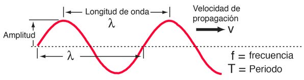
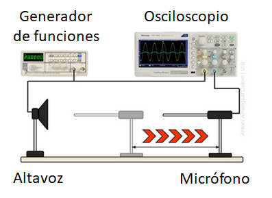
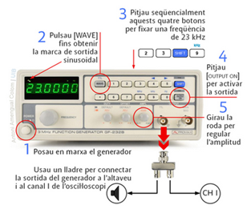
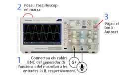
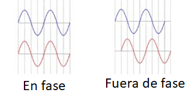

Fundamentos Teóricos
¿Qué es una onda sonora?
El sonido es una onda mecánica que necesita un medio para propagarse, como el aire, el agua o un sólido.
Cuando un altavoz vibra, genera fluctuaciones de presión en el aire que se propagan como una onda longitudinal.
En estas ondas, las partículas del medio oscilan en la misma dirección en la que viaja la onda.
Relación entre longitud de onda, frecuencia y velocidad
La velocidad de una onda (\(v\)) está relacionada con su frecuencia (\(f\)) y su longitud de onda (\(\lambda\)) mediante la ecuación:
\[
v = \lambda f
\]
donde la frecuencia (\(f\)) se mide en Hercios (Hz=1/s) y la longitud de onda (\(\lambda\)) en metros para obtener la rápidez con la que la onda se propaga a través del medio (\(v\)) en m/s.
La frecuencia es el número de oscilaciones que ocurren por segundo y la longitud de onda (\(\lambda\)) es la distancia entre dos puntos consecutivos que están en la misma fase (por ejemplo, dos crestas o dos valles).

Figura 1: Onda sinusoidad en un instante de tiempo fijo.
En el aire, el sonido tiene una velocidad aproximada de 343 m/s a temperatura ambiente (20 °C). Sin embargo, esta velocidad varía ligeramente con la temperatura y las propiedades del medio.
La velocidad de propagación de la onda depende del medio en el que se propaga pero no de su frecuencia. La frecuencia de la onda está determinada por la fuente que genera la onda.
¿Cómo medimos la velocidad del sonido en esta práctica?
En esta práctica, generaremos un sonido de frecuencia conocida utilizando un generador de funciones conectado a un altavoz. Este sonido será detectado por un micrófono, y las señales serán observadas en un osciloscopio.
El procedimiento es el siguiente:
- El generador de funciones envía una señal sinusoidal al altavoz, generando ondas sonoras.
- El micrófono detecta el sonido y transforma la onda acústica en una señal eléctrica.
- En el osciloscopio, observamos cómo cambia la fase de la señal del micrófono al moverlo respecto al altavoz.
Cuando encontramos dos posiciones consecutivas donde las señales del altavoz y el micrófono están en fase, la distancia recorrida por el micrófono corresponde a una longitud de onda (\(\lambda\)). Con esta longitud de onda y la frecuencia (\(f\)), podemos calcular
la velocidad del sonido con la fórmula:
\[
v = \lambda f
\]
Preparación de la Práctica
La Figura 2 muestra las conexiones entre los diferentes instrumentos de esta práctica:

Figura 2: Montaje de la práctica.
El micrófono está delante del altavoz, sobre un soporte que nos permite moverlo por una vía. La salida del generador de funciones está conectada a la vez al altavoz y al osciloscopio. La salida del micrófono está conectada al osciloscopio.
Sigue los pasos siguientes para poner la práctica en marcha:
- Colocar la punta del micrófono a unos 2 cm del altavoz, asegurándote de que están alineados, con la punta del microfono apuntando al centro del altavoz.
- Enciende el generador de funciones y configuralo para emitir una señal sinusoidal con una frecuencia de 23 kHz como se muestra en la Figura 3. Comprueba que el piloto encima del botón de [output on] está en verde.

Figura 3: Puesta en marcha del generador de funciones.
- Enciende el osciloscopio, como se muestra en la Figura 4. A continuación pulsa el botón de "Autoset" del osciloscopio y verifica que la señal del generador (línea amarilla) y la del micrófono (línea azul) están visibles en la pantalla del osciloscopio.
Si la señal del micrófono (línea azul) no aparece en la pantalla puede ser debido a que el micrófono está apagado. Pulsa el botón rojo en la parte superior del micrófono para encenderlo.

Figura 4: Puesta en marcha del osciloscopio.
- Comprueba que la señal del micrófono (línea azul) es también una senal sinusoidal. Si la señal está saturada (aparece como una señal cuadratica o sinusoidal con los picos cortados) baja la amplitud del generador de funciones (Paso 5 en la Figura 3).
Si aun así no se consigue eliminar la saturación, puedes intentar reducir la ganancia del micrófono con la rueda que este tiene en la parte superior.
- Con la ruedas grande (amplitud) y pequeña (posición) del osciloscopio se puede cambinar la amplitud y posición de las señales del generador y del micrófono en la pantalla del osciloscopio. Moverlas hasta que ambas señales tengan mas o menos la misma amplitud y altura.
- Separar lentamente el micrófono del altavoz y observar cómo en la pantalla del osciloscopio la señal captada por el microfono (línea azul) se desplaza lateralmente. Este desplazamiento indica que la fase de esta señal está cambiando.
El espacio recorrido por el micrófono sobre la vía entre dos posiciones consecutivas donde las dos señales están en fase es igual a la longitud de onda del sonido que sale del altavoz. Dos señales están en fase cuando sus máximos y mínimos coinciden (ver Figura 5)
Aunque se puede determinar la velocidad del sonido midiendo solo una vez la longitud de onda, esta medida tiene mucho error por lo que en la práctica vamos a promediar varias longitudes de onda para reducir el error en la determinación de la velocidad del sonido.

Figura 5: Ondas en fase y fuera de fase.
Tarea 1: Medida de la velocidad del sonido
- Coloca el micrófono en la posición más cercana al altavoz donde ambas señales están en fase. Apunta en la tabla posición (\( x_0\)) del micrófono sobre la guía en metros usando un punto del soporte del micrófono como referencia.
- Aleja lentamente el microfono del altavoz y cuenta las veces que las señales se colocan en fase. Una vez que las señales han estado en fase 10 veces (\( n=10 \)), apunta la posición final del micrófono sobre la guía (\( x_n\)) en metros usando el mismo punto de referencia que usaste para (\( x_0\)).
- Realiza los calculos que se piden en la tabla para esta frecuencia y determina la velocidad del sonido.
- Repite el procedimiento para las diferentes frecuencias (23, 25, 27 y 30 kHz) que se piden en la tabla, promediando la longitud de onda las veces que se indican en la tabla (\( n\)) y calcula la velocidad del sonido en cada caso.
- Cálcula la velocidad del sonido teórica tal y como se indica en la hoja de datos. Contesta a las preguntas de la hoja de datos y
una vez tengas las respuestas avisa al profesor/a responsable de la práctica para compartir tus respuestas.